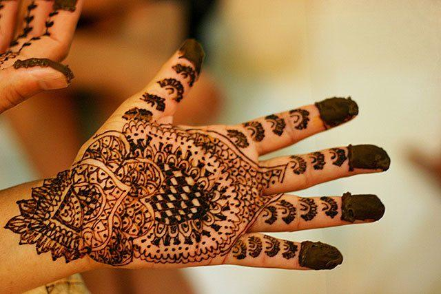
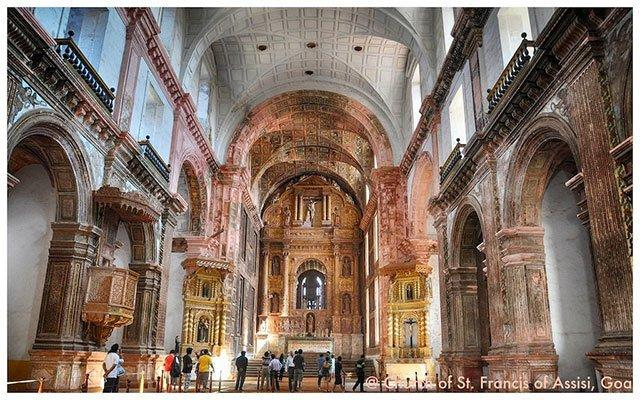
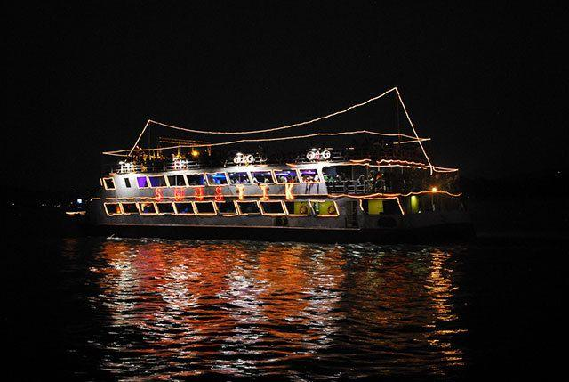
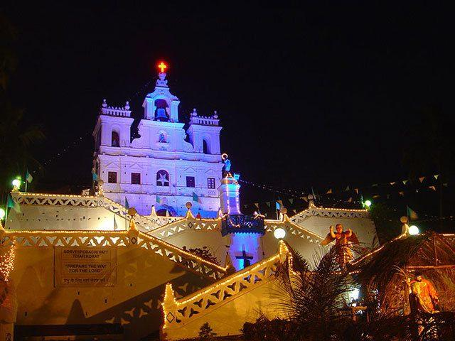
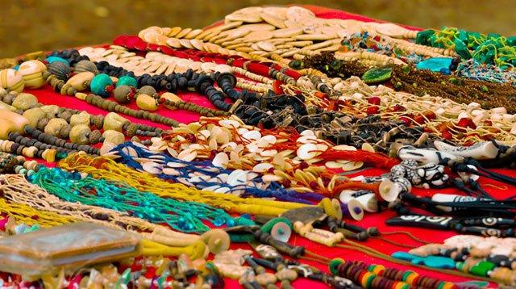
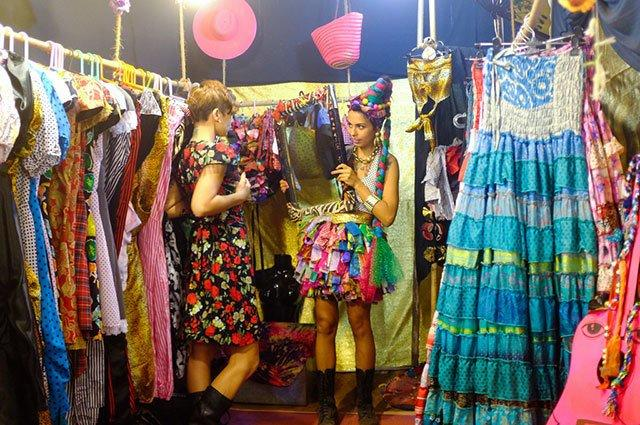
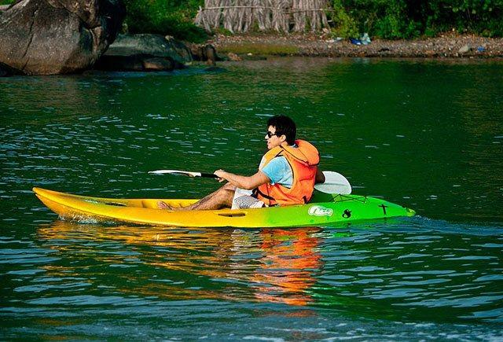
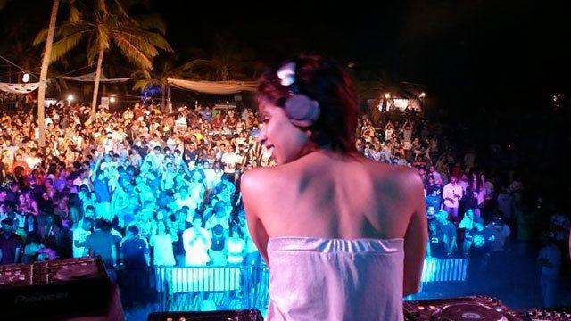

Things To Do
Planning A Trip To Goa? Here's the 9 most fun things to do in Goa, our very own land of sin
You've read about all the crazy sights, sounds, places and foods of Goa, but before you embark on your visit, you might want to go through our quick overview of the 10 most fun things to experience in our very own land of sin! From Henna tattoos to cruises, Christmas masses to flea markets, this amazing land brings pleasures of paradoxes on your platter!
Get a Black Henna tattoo

Get a black henna tattoo painted onto any part of your body by a tribal tattoo artist right on the beach. You can choose from a large variety of designs, ranging from simple to really intricate. The most beautiful part of a henna tattoo is that it fades away after a couple of weeks so there is no way you can be bound for too long by a beer fuelled choice of design!

The Basilica of Bom Jesus located in Old Goa is a UNESCO World Heritage site. It contains the tomb and mortal remains of St Francis Xavier. A must visit for first-timers! Visiting Old Goa is quite the experience and one feels totally transported back in time wandering around its corridors and by-lanes.

Get on board one of the Sunset/Moonlight/Casino cruises on the Mandovi River. They're great fun! The yachts are totally lit up at night and look like glittering jewels floating down the Mandovi. Make sure to carry your lucky charm if you're in the mood to wager!
Celebrate Christmas in Goa

A pre-dominantly Christian state, Goa has got the prettiest Christmas culture in all of India! Goa lights up like a bulb during Christmas week. Every lane has dozens of lanterns and carols can be heard in every nook and cranny of the state. Even the Hindu population living here participates happily in this festival. There is lots of drinking, feasting and merry-making and the whole state has a wonderful charm to it.
Wednesdays Anjuna Flea Market

Between the months of September to March, visiting the Anjuna flea market is one the most exciting things to do in Goa. The market is open every Wednesday starting 8 pm and runs late into the night. Walking around the market amidst an eclectic mix of foreign and Indian travelers in the crowd can make for a pretty interesting evening. You’ll find over 500 stalls to shop, with items such as junk jewelry, electronics, handicrafts, paintings, Balinese batik, mirror-worked waistcoats & trendy wrap-arounds.
Shopping Tip: Be sure to bargain before you buy anything here!
Saturday Night Market (Arpora)

A retro styled artisan market, the Saturday night market showcases cultural influences from all across the globe. The market is only held during the high tourist season (October – April) from 4pm to 11pm. You can walk through the meandering lanes and shop for everything from spices, teas, and homemade knick-knacks to handicrafts, leather products and designer jewelry. There are also plenty of options to eat and drink and some live music on offer as well.
One of the popular & fun things to do in Goa, Dolphin spotting is in season between the months of October to May. Most dolphin spotting boat cruises leave from near the mouth of the Mandovi River near Panaji. Dolphin sighting trips usually start early in the morning. There are different boat tours on offer which include the services of a professional guide. Some all inclusive tours even include chilled beer and Goan barbeque in the cost.

Goa has endless beaches and many opportunities for water sports for people with a sense of adventure. From surfing to jet skiing to parasailing, there's something for everyone, no matter what your threshold for risk! All water sports are supervised by well trained staff so it's quite safe as well.

Shack-hop the night away and move from one party to the other. There are usually no charges on entering the shacks and it's an experience one should have at least once! Expect ultra-loud electronic dance music, free flowing alcohol, lots of pretty people and er… other things!